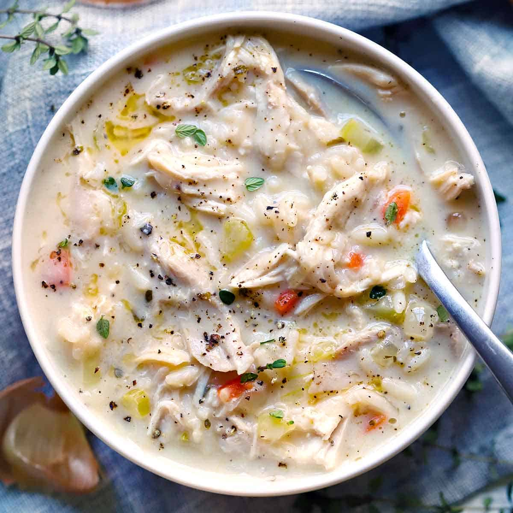

Creamy Chicken and Rice Soup

Description
This creamy chicken and rice soup is comforting and delicious. The longer it simmers, the more flavorful it gets!
Ingredients
- 2 (14 ounce) cans chicken broth
- 2 cups uncooked brown rice
- 1 ½ cups chopped celery
- 1 ½ cups chopped onion
- 1 ½ cups water
- 1 teaspoon chicken bouillon powder
- 1 cup butter or margarine
- ¾ cup all-purpose flour
- 6 cups milk, divided
- 3 cups chopped, cooked chicken meat
- salt and pepper to taste
Steps
- Combine broth, rice, celery, onions, water, and bouillon in a large pot over high heat; bring to a boil. Reduce heat to low, cover, and simmer until the rice has absorbed most of the liquid, about 30 minutes. Remove from heat and set aside.
- Melt butter in a medium saucepan over medium heat; gradually add flour, stirring continuously to make a thick paste. Whisk in 4 cups of milk, 1/2 cup at a time, whisking constantly, until smooth.
- Stir sauce and chopped chicken into rice mixture; add some or all of the remaining 2 cups of milk to reach desired consistency. Season with salt and pepper; simmer over low heat, stirring every 15 minutes, for 1 hour.
- Layer the lasagna according to the recipe instructions such as with meat sauce, noodels, ricotta mixtures, moxarella slices. etc.